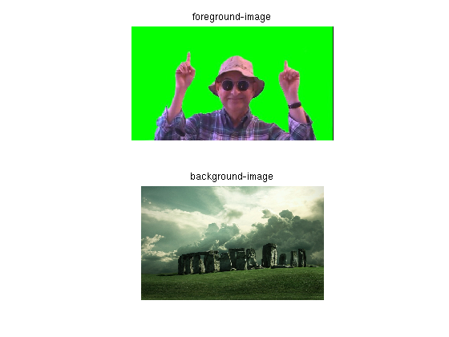
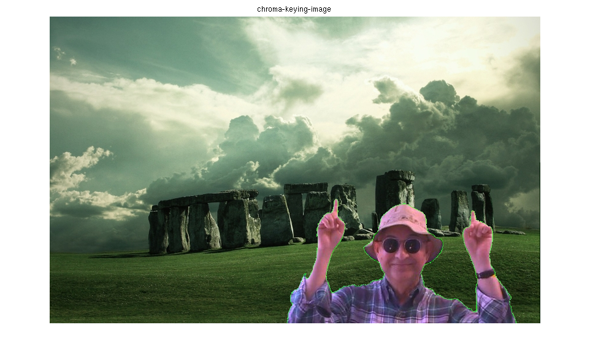

clear all;
clc;
img_f=imread('./chroma2.jpg');
img_b=imread('./background.jpg');
fsize = size(img_f);
bsize = size(img_b);
pad_dim=[ bsize(1)-fsize(1),bsize(2)-fsize(2)];
img_f_sized = padarray( img_f, pad_dim ,'pre') ;
min_threshold = 250;
max_threshold = 225;
non_green=find((img_f_sized(:,:,2) < max_threshold & img_f_sized(:,:,2) > 0) ...
| img_f_sized(:,:,2) > min_threshold +15);
final_img=img_b;
final_img(non_green) = img_f_sized(non_green);
final_img(prod(bsize)/3+non_green) = img_f_sized(prod(bsize)/3+non_green);
final_img(2*prod(bsize)/3+non_green) = img_f_sized(2*prod(bsize)/3+non_green);
figure;
subplot( 2,1, 1);
imshow(img_f);
title('foreground-image');
subplot( 2 ,1, 2);
imshow(img_b);
title('background-image');
figure
imshow(final_img);
title('chroma-keying-image');
 